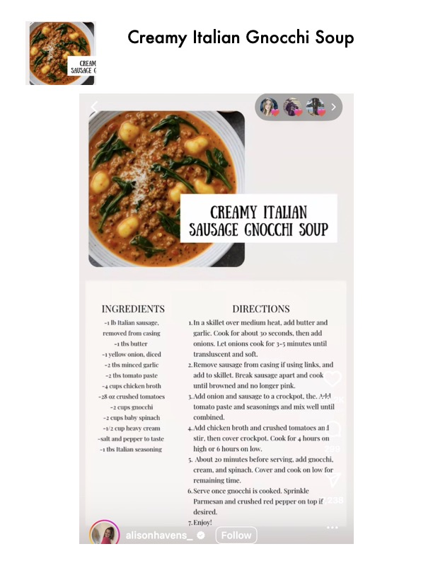

Creamy Italian Gnocchi Soup

Original cookbook page 811
Ingredients
- -1 1b Italian
- removed from
- -1 ths butter
- -1 yellow onion, diced
- -2 ths minced garlic
- -2 tbs tomato paste
- -4 cups chicken broth
- z. crushed tomatoes
- s gnocchi
- -2 cups baby spinach
- -1/2 cup heavy cream
- -salt and pepper to taste
- -1 ths Italian seasoning
- Creamy Italian Gnocchi
- CREAMY ITALIAN
- SAUSAGE GNOCCHI 501
Instructions
- ain let over medium heat, add butter garlic. Cook for about 30 seconds, then at onions. Let onions cook for 3-5 minutes transluscent and soft. 2.Remove sausage from casing if using link add to skillet. Break sausage apart and co until browned and no longer pink. 3.Add onion and sausage to a crockpot, the and mi ix we tomato paste and seasoning: combined. 4.Add chicken broth and crushed tomatoes stir, then cover crockpot. Cook for 4 how high or 6 hours on low. cream, and spinach. Cover and cook on I remaining time.
- Serve once gno Parmesan and cr desired.
- Enjoy! 'hi is cooked. Sprinkle shed red pepper on toy
Recipe #811 from collection